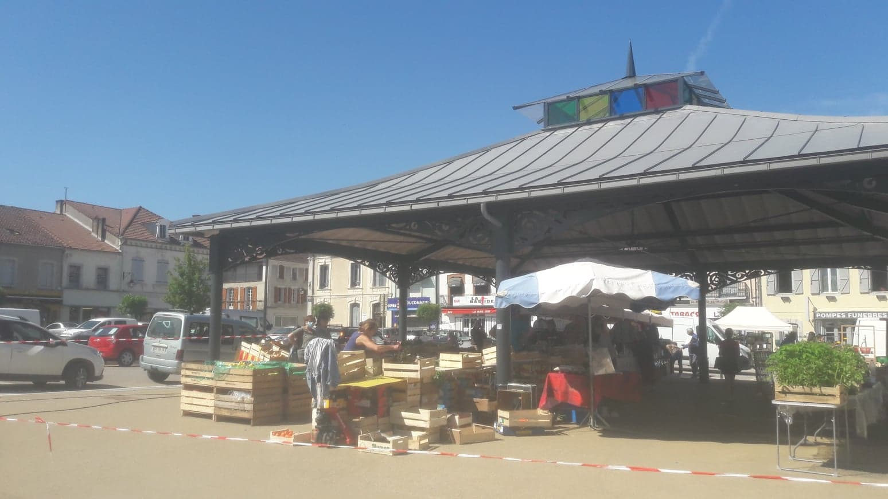
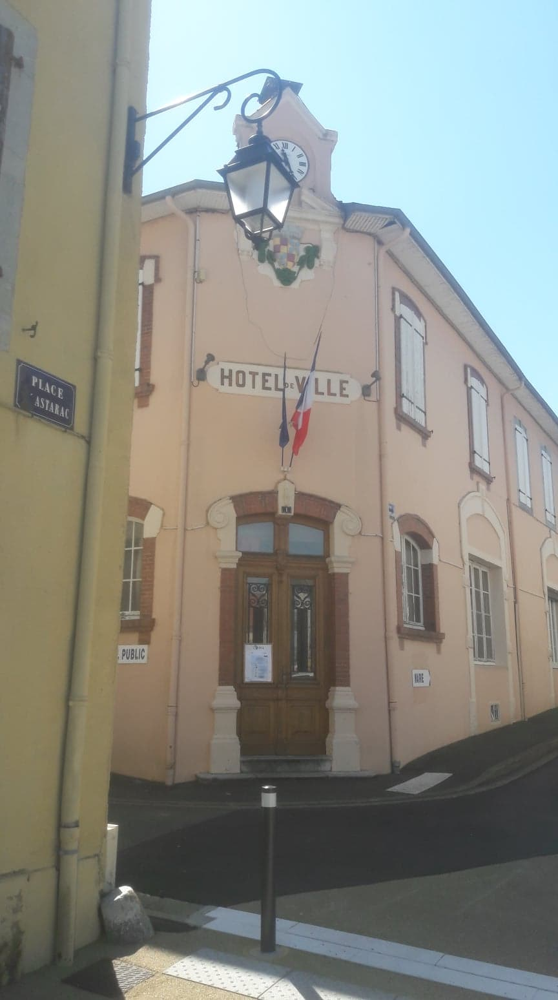
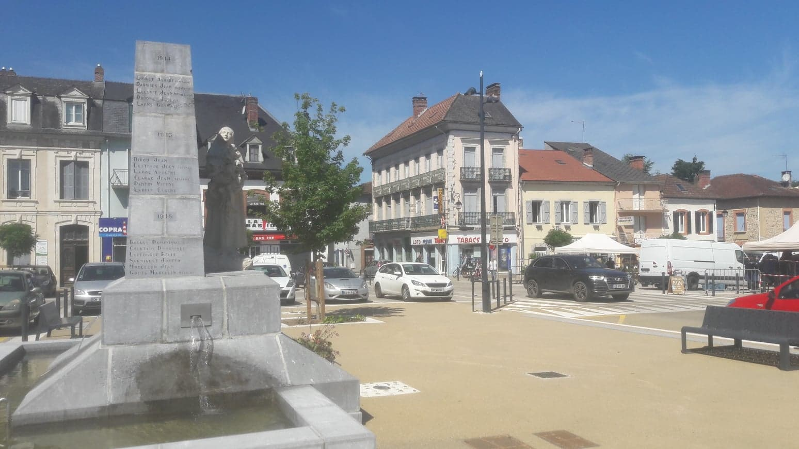
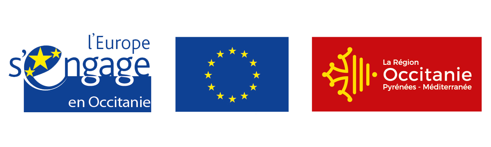

<div class="wrapper">
  <div class="page-header">
    <div class="bloc2">
      <h1>La commune de Tournay "Le Petit Nice"</h1>
      <p><br/>Lieu de vie très agréable qui lui vaut le surnom de "Petit Nice". C'est une cité à échelle humaine qui bénéficie d'une position géographique stratégique.
        <br/> <br/> A seulement 10 minutes de la ville de Tarbes grâce à une portion d'autoroute gratuite, Tournay bénéficie d'un cadre de vie idéal.
      </p>
      <div id="pres" class="main">
        <div class="container">
      <div class="main-content">
      <div class="owl-carousel owl-theme">
        <div class="item imgbase" >
          
        </div>

        <div class="item imgbase2" >
          
        </div><div class="item imgbase" >
        
      </div>

      </div>
      <div class="owl-theme">
        <div class="owl-controls">
          <div class="custom-nav owl-nav"></div>
        </div>
      </div>
      </div>
        </div>
      </div>
    <p>
        <br/> <br/>A l'entrée du Pays des Coteaux, au coeur du Piémont pyrénéen, Tournay, vous offre la découverte d'un terroir authentique et d'une nature préservée.
        <br/> <br/>Les chemins de crêtes avec les Pyrénées pour toiles de fond, les sentiers de randonnées au coeur de nos forêts, à parcourir à pied, à cheval et en VTT, l'architecture rurale de nos villages, sont autant de paysages que vous apprécierez tout au long de votre séjour.
        <br/> Venez les découvrir et partager en famille ou entre amis ces moments privilégiés.
        <br/> <br/>Commerces de proximité : boulangerie, patisserie, boucherie, épicerie, cave à vin, café avec brasserie (le midi), restaurant, pizzaria, produits du terroir, banque, pharmacie….
        <br/> <br/>
      </p>
      <h1>Visites et activités</h1>
      <ul>
        <li>
          <a href="http://www.abbaye-escaladieu.com/" target = "_blank">L'abbaye de l'Escaladieu</a>
        </li ><li>
          <a href="http://www.chateaudemauvezin.com/" target = "_blank">Le château de Mauvezin</a>
      </li><li>
          <a href="https://gouffre-esparros.fr/" target = "_blank">Le Gouffre d'Esparros</a>
      </li><li>
          <a href="https://picdumidi.com/" target = "_blank">le Pic du Midi</a>
      </li><li>
          <a href="https://www.n-py.com/fr/grand-tourmalet" target = "_blank">Grand-Tourmalet</a>
      </li><li>
          <a href="http://www.ville-tournay.fr/Framework/OtideaFrameworkVendorsJS/ckfinder/userfiles/files/brochure-randonnee_206.pdf" target = "_blank">Randonnées vertes  dans les Coteaux…</a>
      </li>
      </ul>
      

    </div>
  </div>
</div>
